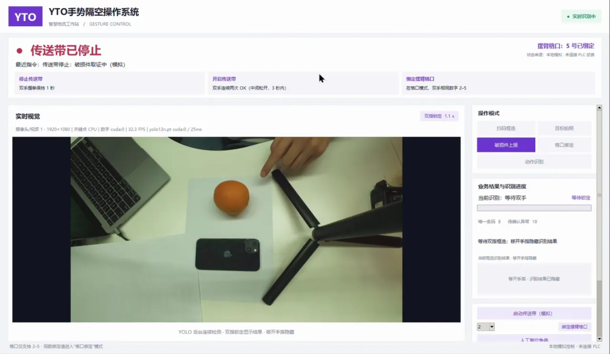

DEMO 3.1 — 双指框定 → 目标识别 → 拍照取证 → 本地报告
DEMO 3.1 · 异常处置
破损识别与异常上报取证
发现破损包装、散落物品或需要复核的内件时，双指框定目标，系统识别所选物品并保存证据，形成待处理报告。
- 识别准备
- 进入破损件上报模式后，YOLO12 在后台持续处理最新画面，提前准备识别结果
- 目标锁定
- 双食指指向目标对角，稳定约 1.1 秒后锁定；有效缓存可立即显示目标类别，如 book、apple
- 证据留存
- 目标框显示类别与置信度，保存带标注的取证照片及 JSON 报告；移开手指后隐藏临时识别结果
- 当前边界
- 实现的是「操作员发起异常 → 目标识别 → 拍照取证 → 本地报告」；企业系统上传与专用破损检测模型为后续接入内容
1.1s停留锁定
1次手势完成取证
0次设备拿放
高清入口
HD · MP4